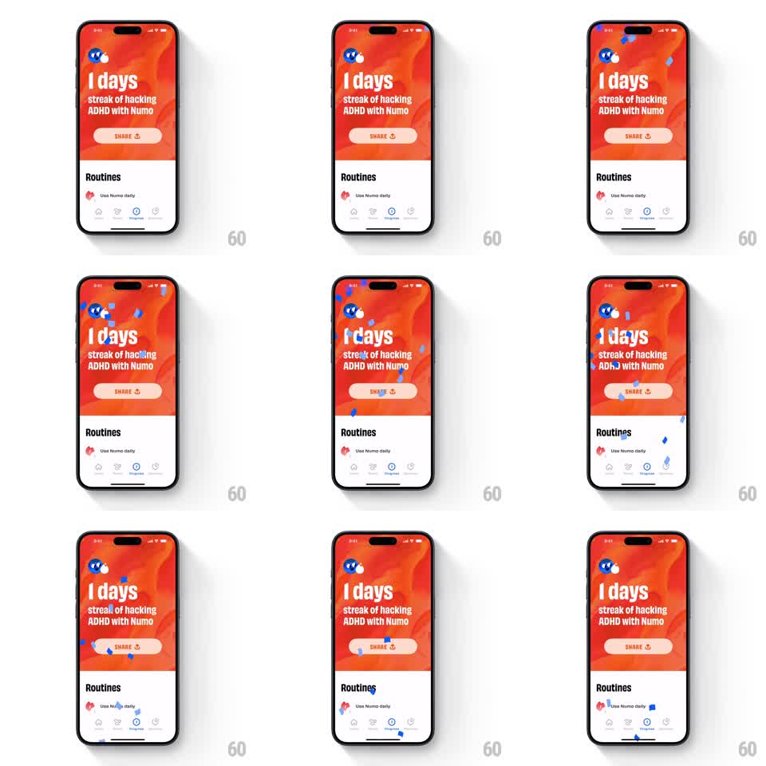

Media
Frame-by-frame

Rebuild this animation 1:1: Numo's streak celebration - a subtle blue confetti burst rains over the vibrant orange streak screen ("1 days streak of hacking ADHD with Numo") while the layout stays put.

Rebuild this animation 1:1: Numo's streak celebration - a subtle blue confetti burst rains over the vibrant orange streak screen ("1 days streak of hacking ADHD with Numo") while the layout stays put.
## Integration
Integration: stack-agnostic spec - springs given as stiffness/damping, timed motions as duration + curve; map every value to your framework and animation library of choice.
## Scene
Bold screen: top half is a hot orange-red gradient with the Numo mascot peeking at top-left, huge "1 days" headline, "streak of hacking ADHD with Numo" copy, a pale "SHARE" pill button; bottom half white with a "Routines" section header, one routine row, and a tab bar.
## Motion spec
Pattern: one-shot confetti rain, ~2s.
- On screen appear, 20-30 small confetti pieces (blue squares and rounded bits, 4-8px) spawn along the top edge across the full width.
- Pieces fall with gravity, each rotating (0 -> 180-360deg) and swaying side to side (sinusoidal +-15px, per-piece phase), fading out in the last 300ms of their fall.
- Fall speeds vary (1.2-2s to reach the bottom); no piece loops.
- Screen content is static; confetti renders above everything except the status bar.
## Calibration
- Confetti is sparse and small - this is a nod, not a party cannon.
- Blue-on-orange contrast is the whole palette; do not add brand colors.
## Reduced motion
No confetti; a brief 200ms fade of the headline communicates the milestone.
## Don't miss
- Pieces keep falling off the bottom edge - they never pile up or bounce.
- The SHARE button and streak count are unaffected; confetti is purely decorative overlay.